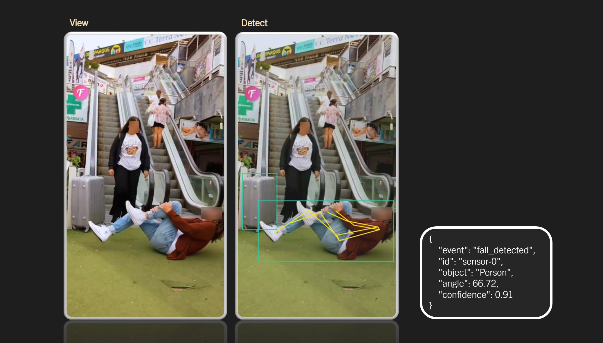
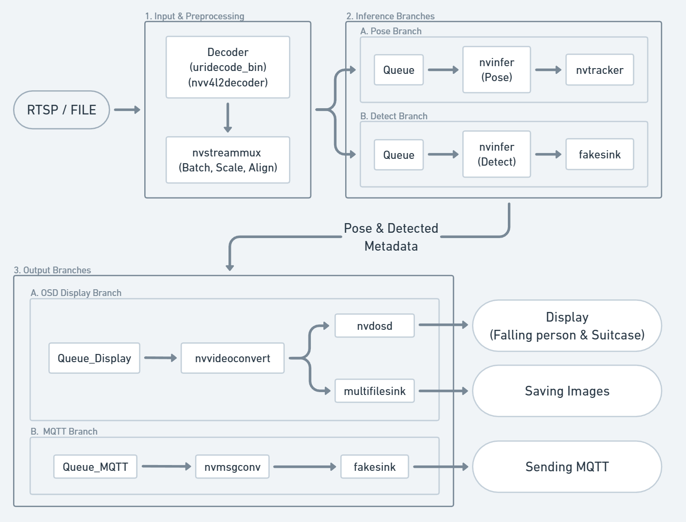

Escalator Damage Detector
手扶梯危險偵測系統（DeepStream + YOLO-Pose / Seg + MQTT）
- YOLO-Pose Skeleton & Segmentation Tracking & MQTT Event Messaging
- OpenCV Perspective Correction & Detection-Zone Alignment
專案背景
在大型車站與商場中，跌倒事故與行李掉落是最常見的手扶梯意外原因。
人工監視容易疲乏、視角有限，也無法在第一時間回報事件。
因此設計了一套 多流、低延遲、可邊緣部署的手扶梯危害偵測系統 ，可自動偵測並回傳跌倒姿勢、行李滾落與異常物體，並在 0.1–0.3 秒內推送 MQTT JSON 警示。
場域需求
- 監視器數量龐大，跌倒姿勢變化快速，人工監看容易漏掉關鍵事故畫面。
- 跌倒與行李掉落發生在1–2 秒內，容易導致二次傷害。
- 傳統偵測多以區域入侵或簡單位移判斷，難以理解「姿勢」與「動作」。
- 手扶梯傾斜與視角差異，影響視覺辨識導致誤判。
問題解決
- 觀測視角不固定 → 透視校正改善感測距離誤差
- 單一系統多需求 → DeepStream 串接 Pose + Segmentation
- 即時事件低延遲 → 低延遲、高 FPS 的推論架構
- 多路影像同時處理 → DeepStream pipeline 多路穩定性
- RTSP 多路流 → 一台 Jetson 就能跑多個手扶梯
- Edge AI 部署 → 獨立運作，不依賴雲端，延遲小、可靠度高
主導系統技術
-
Skeleton-based Detection透過 YOLO-Pose 分析骨架關節角度，辨識跌倒、翻滾等異常姿勢。
-
Multi-stream InferenceDeepStream Pipeline 同步解析多路 RTSP 串流，集中管理多台監視器，並行 Pose / Seg / Tracking。
-
Real-time Alerts以 MQTT 發送事件 JSON，包含時間、座標、物件 ID、姿態資訊，可與既有監控系統串接。
-
Edge Deployment以 TensorRT 加速推論，在 Jetson / GPU 上維持高 FPS 與低延遲。
PROJECT
Escalator Damage Detector
整合 NVIDIA DeepStream、YOLO-Pose、Segment、TensorRT、MQTT ，支援多人多物件追蹤、跌倒偵測、行李掉落追蹤與即時事件推送。
REPOSITORIES
DeepStream
YOLO-Pose
YOLO-Seg
TensorRT
MQTT
System Architecture
NVIDIA DeepStream 多分支推論架構，整合 Pose 與 Detection 兩條 Branch，並透過 OSD 即時顯示與 MQTT 推送即時事件。
